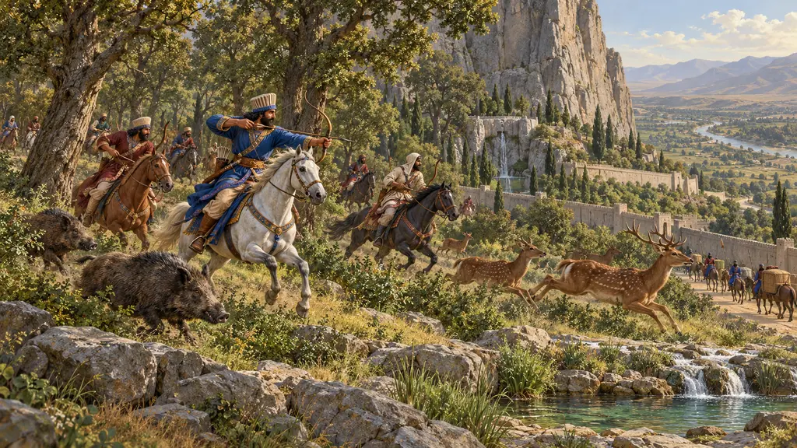
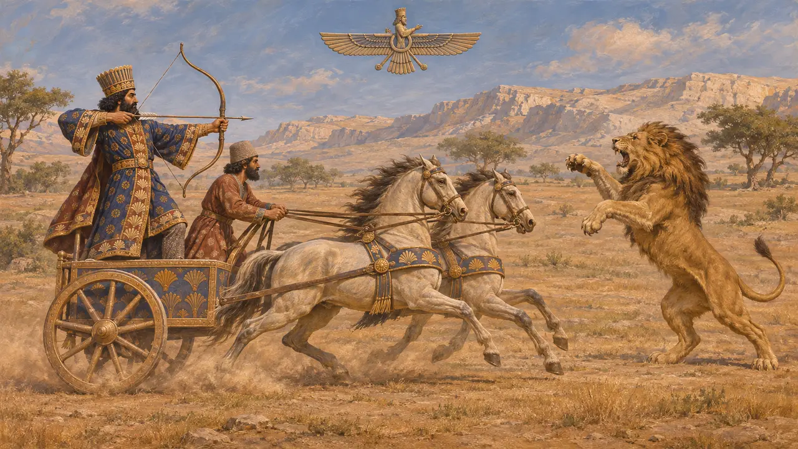
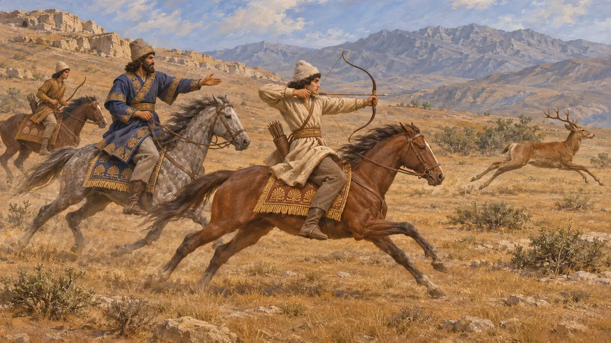
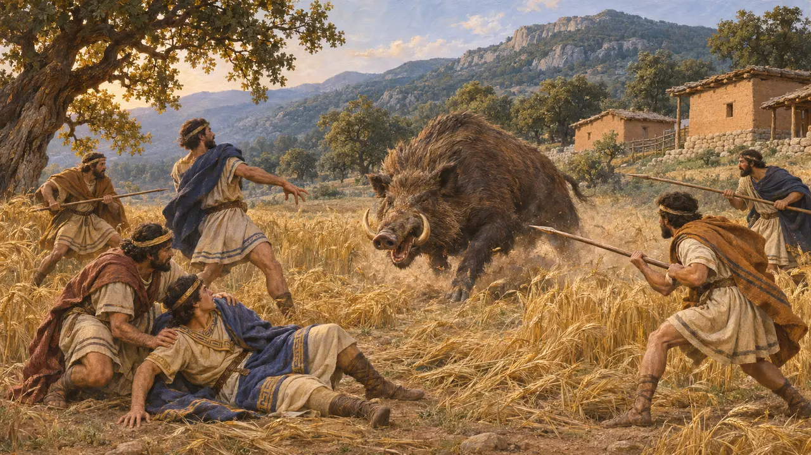
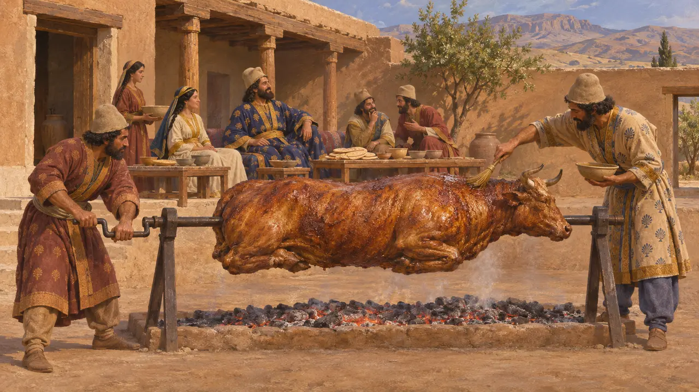

Avcı Köşkü
Ahameniş dünyasında av hayvanlarının ve tehlikeli yaban hayvanlarının avı, MÖ 6.-5. yüzyıl
Pers kralları avcı olarak betimlenirdi ve Yunan yazarlar avı Pers gençliğinin talim alanı olarak anlatır. Aslanlar, leoparlar, kurtlar ve yaban domuzları imparatorlukta hâlâ dolaşıyordu ve sıradan insanların sürüleri ile tarlaları onlardan korunmalıydı. Sıradan hanelerin ne kadar av eti yediği kayıtlı değildir.
Oyunda: Köşkün avcıları açık arazide dolaşıp eve et getirir, askerlerinin öldürdüğü her hayvanın leşini de taşır. Hayvanlar kendilerine yaklaşan avcıları ve yolcuları öldürür. Bu bir basitleştirmedir: kaynaklar kraliyet ve soylu avı hakkında sıradan avcıların işinden çok daha fazlasını anlatır.

Avcı olarak Kral
BelgelerdeDareios'un adı kazınmış, bugün British Museum'da bulunan bir silindir mühür, kanatlı bir simgenin altında arabasından şahlanan bir aslana ok atan kralı gösterir. Yakın Doğu'nun her yanında kraliyet mühürleri ve kabartmaları kralı uzun zamandır aslan öldürürken gösterirdi; bu, onun ülkesini ve halkını yabanıl olandan koruduğunun işaretiydi.
British Museum, seal of Darius, BM 89132

Savaş talimi olarak av
Antik anlatıHerodotos, Pers oğlanlarına beş yaşından yirmi yaşına dek üç şey öğretildiğini söyler: ata binmek, ok atmak ve doğruyu söylemek. 4. yüzyılda yazan Ksenophon, kralın gençleri ava götürdüğünü, çünkü avın savaş için en gerçek talim olduğunu söyler. Onun tablosu ülküleştirilmiştir, ama iki yazar da avı orduya bağlar.
Herodotus 1.136; Xenophon, Cyropaedia 1.2.9-10

Mysia Olympos'unun yaban domuzu
Geç dönem efsanesiHerodotos, Mysia Olympos'undan inen kocaman bir yaban domuzunun çiftçilerin tarlalarını mahvettiğini, üzerine gönderilen adamların ise yaralanıp hiçbir şey yapamadığını anlatır. Lydialı Kroisos'a yalvarıp yardım istediler; oğlu Atys ava gitti ve domuza atılan bir mızrakla öldü. Hikâye, tek bir yaban hayvanının bir kırsalı nasıl tehdit edebileceğini gösterir.
Herodotus 1.36-43

Sofradaki et
TartışmalıHerodotos, varlıklı Perslerin doğum günlerinde bütün bir öküz, at, deve ya da eşek kızarttığını, daha yoksul ailelerin ise daha küçük hayvanlar sunduğunu söyler. Persepolis kayıtlarında sürülerden gelen et memurlara da dağıtılırdı. Sıradan hanelerin kendi sürülerinin eti yerine ne sıklıkla av eti yediği bilinmez.
Herodotus 1.133; W. Henkelman, The Other Gods Who Are, 2008
Kaynaklar
- British Museum, seal of Darius, BM 89132
- Herodotus 1.36-43, 1.133, 1.136
- Xenophon, Cyropaedia 1.2.9-10
- W. Henkelman, The Other Gods Who Are, 2008